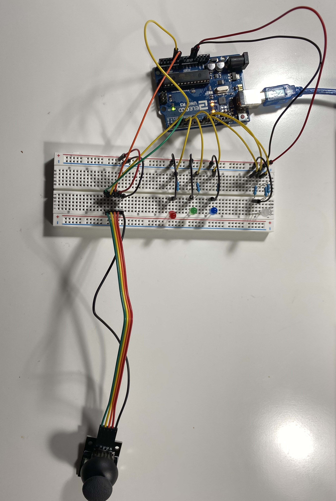

create a schematic for a circuit in which a webpage is creating using p5.js that interacts with the Arduino
implement this circuit using a breadboard
write firmware in Arduino, writing a message to the serial port
the assignment must use:
JSON parsing, Serial, and p5.js
interactive webpage
a minimum of two input devices from the arduino (e.g. the joystick counts as 2 inputs)
a minimum of one output device from the arduino, e.g. an LED
Here is a gif of the joystick/LED 🕹 circuit in action!
For my circuit, I decided to make an interactive game using the joystick. I used the joystick as my input devices, and LEDs as my output devices.
The program works by using the joystick to choose a color for Rudolph's nose. Pressing certain keys on the keyboard change the lights to make them into party lights -> 'p' makes the LEDs fade 10 times, 'b' makes the red, green, and blue LEDs blink 5 times, and space makes the LEDs all turn off.
Schematic
Schematic and calculations
for my circuit.
Since I was using red, green, and blue LEDs (in the RGB LED) for my circuit, I did two sets of calculations to determine what the appropriate
resistance to use for each LED: one for the red and green LEDs, and another set of calculations for the blue and white LEDs. For red, yellow,
and green LEDs, they all have 1.8V voltage drop, and for blue, pink, and white LEDs, they all have 3.3 voltage drop. The
desired current for all the LEDs I used was 20mA, or 0.02A (found based on the datasheets for the LEDs). When calculating the
appropriate resistance to be used in the circuit, I started with calculating the voltage across. For each of the LEDs, I decided to use 330
Ω resistors to be consistent.
Red and Green LEDs:
Knowing that the Arduino gives 5V, I calculated the voltage across as 3.2V (5V - 1.8V drop = 3.2V across). Using the known voltage across and
the desired current, I then used Ohm's Law with the equation V=IR to get a value R=160Ω for resistance. To ensure
that I did not overload the LEDs and cause them to burn out, I decided to round up and use a 330Ω resistor (shown in schematic
above calculations).
-- Blue LED: Knowing that the Arduino gives 5V, I calculated the voltage across as 1.7V
(5V - 3.3V drop = 1.7V across). Using the known voltage across and the desired current, I then used Ohm's Law with the equation
V=IR to get a value R=90Ω for resistance. To decrease the brightness of the LED, I decided to round up and use a
330Ω resistor (shown in schematic above calculations).
Circuit
For my circuit, I used a joystick, and red, green, blue, and RGB LEDs.
 Top View of my Circuit
Top View of my Circuit (close up)
Side View of my Circuit
Arduino Code
/* A5: High(er) Voltage and Transistors
* Jocelyn Chen
* Monday 2.21.2022
*
* This program is a pick-all-the-worms-without-picking-the-infected-worm game (inspired by Operation and Let's Go Fishin games)
* This program includes a capacitive sensor, RGB LED, N-MOSFET Transistor, and LED strip.
* Some code in this program references Arduino example codes (fading the LED uses the Arduino Fade Example Code).
*/
// include library for capacitive sensor#include <CapacitiveSensor.h>
// capacitive sensor with 1 megaohm resistor between pins 4 & 2, pin 2 is sensor pin, add wireCapacitiveSensor cs_4_2 = CapacitiveSensor(4,2);
const int nt_pin = 10; // pin for n-mostfet transistorconst int buzzer = 7; // pin for passive buzzerconst int red_pin = 5; // pin for red color in RGB LEDconst int green_pin = 6; // pin for green color in RGB LEDconst int blue_pin = 9; // pin for blue color in RGB LED/// SETUP FUNCTION ///// the setup function runs once when you press reset or power the boardvoidsetup() {
Serial.begin(9600); // Initialize serial communication at 9600 bits per second:pinMode(nt_pin, OUTPUT); // Set pin for N-MOSFET transistor as OUTPUTanalogWrite(nt_pin, 0); // Set LED strip initial state to off (0)pinMode(buzzer, OUTPUT); // Set pin for buzzer set as OUTPUTpinMode(red_pin, OUTPUT); // Set pin for red color in RGB LED as OUTPUTanalogWrite(red_pin, 0); // Set RGB LED red color initial state to off (0)pinMode(green_pin, OUTPUT); // Set pin for green color in RGB LED as OUTPUTanalogWrite(green_pin, 0); // Set RGB LED green color initial state to off (0)pinMode(blue_pin, OUTPUT); // Set pin for blue color in RGB LED as OUTPUTanalogWrite(blue_pin, 0); // Set RGB LED blue color initial state to off (0)
}
/// ALARM FUNCTION ///// the alarm function sounds the buzzer and flashes the LED strip and RGB LED (red color) using fadevoid alarm() {
// fade out from max to min in increments of 3 points (with max being 100 and min being 0)for (int fadeValue = 100 ; fadeValue >= 0; fadeValue -= 3) {
// map the RGB LED fade value to the range of frequency for the buzzer to calibrate// - read in a range 0 to 100 (fade value for the LED)// - write out a range 900 to 1000 (for buzzer frequency)int frequency = map(fadeValue, 0, 100, 900, 1000);
// set buzzer with the mapped frequency valuetone(buzzer, frequency);
// set red color for RGB LED with the fade valueanalogWrite(red_pin, fadeValue);
// sets LED strip with fade valueanalogWrite(nt_pin, fadeValue);
// wait 20 msdelay(20);
}
// fade in from min to max in increments of 3 points (with max being 100 and min being 0)for (int fadeValue = 0; fadeValue <= 100; fadeValue += 3) {
// map the RGB LED fade value to the range of frequency for the buzzer to calibrate// - read in a range 0 to 100 (fade value for the LED)// - write out a range 900 to 1000 (for buzzer frequency)int frequency = map(fadeValue, 0, 100, 900, 1000);
// set buzzer with the mapped frequency valuetone(buzzer, frequency);
// set red color for RGB LED with the fade valueanalogWrite(red_pin, fadeValue);
// sets LED strip with fade valueanalogWrite(nt_pin, fadeValue);
// wait 20 msdelay(20);
}
}
/// GET READING FUNCTION ///// function to read in the capacitive sensor value as a parameter and either:// - do nothing if a normal worm was picked (reading < 1600)// - sound the alarm and fade LEDs if the infected worm was picked (reading > 1600)// 1600 was chosen as the capacitive sensor read in values from around 0-1800, so I used 1600 as the threshold valuevoid getReading(int led_in) {
// if the capacitive sensor reading is less than 1600if (led_in < 1600) {
// wait 100 msdelay(100);
// Set LED strip to off (0)analogWrite(nt_pin, 0);
// Set red color in RGB LED to 20analogWrite(red_pin, 20);
// Set green color in rgb LED to 20analogWrite(green_pin, 20);
// Set blue color in rgb LED to 20analogWrite(blue_pin, 20);
// Stop buzzer soundnoTone(buzzer);
} else { // led_in >= 1600 (capacitive sensor reading is greater than equal to 1600)for (int i = 0; i < 5; i++) {
// Set green color in rgb LED to 0analogWrite(green_pin, 0);
// Set blue color in rgb LED to 0analogWrite(blue_pin, 0);
// sound the buzzer and fade the LED strip and red color in RGB led
alarm();
}
}
}
/// LOOP FUNCTION ///// the loop function runs over and over again forevervoidloop() {
// set sensor resolution to 30long total1 = cs_4_2.capacitiveSensor(30);
// wait 100 ms (delay) to limit data to serial portdelay(100);
// get capacitive sensor reading and either:// - do nothing if a normal worm was picked (reading < 1600)// - sound the alarm if the infected worm was picked (reading >= 1600)
getReading(total1);
}
Above is a code snippet of my Arduino code. For my code, I initialized the pins for the LEDs as OUTPUTs. For the input devices, I used the
joystick, and I used LEDs as the output devices.
View the arduino code
here!
Video of the choosing the LED color using the photoresistor, and fading the RGB LED to the chosen color using the capacitive sensor. *WARNING* Bright flashing lights *WARNING*